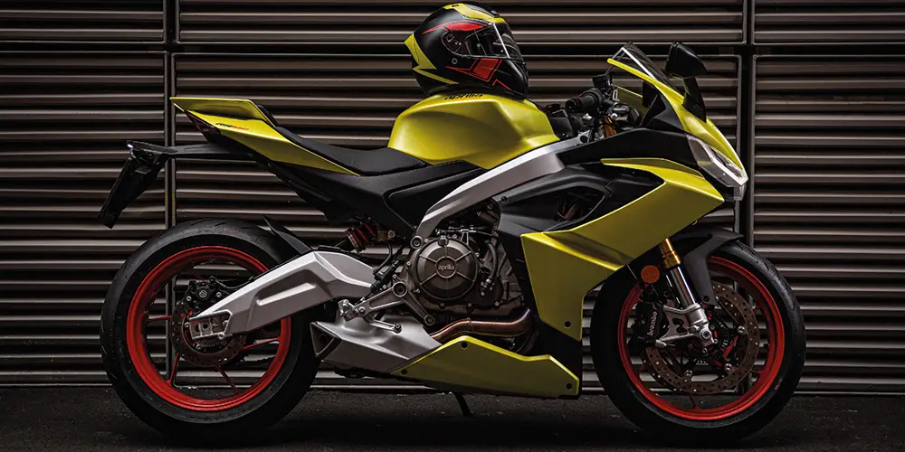

Las Motos Deportivas
Les presento un pequeño resumen sobre las motos deportivas
Las motocicletas deportivas fueron desarrolladas para ofrecer un desempeño superior al de las motos urbanas. Uno de los imperativos en las competencias es la velocidad, por ello los fabricantes tuvieron que fijarse en cada detalle para ganar preciados segundos. De esta manera dieron con la necesidad de hacer motos con un diseño aerodinámico.
El diseño aerodinámico es aquel que permite un adecuado flujo del aire alrededor de la moto en movimiento. Con ello se disminuye la resistencia y la moto puede alcanzar una mayor velocidad. En este sentido, las motos deportivas cortan el aire de manera más efectiva que las motos convencionales. Esto gracias a su estructura y a componentes como el carenado.
